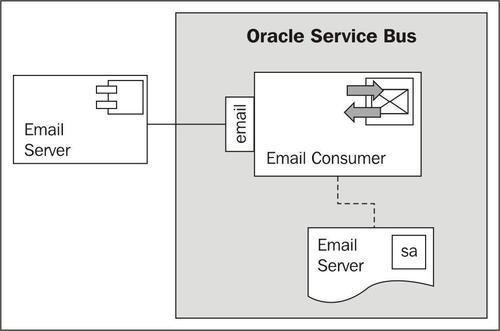
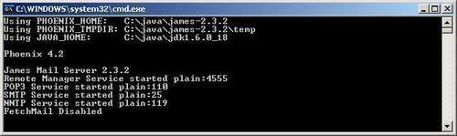
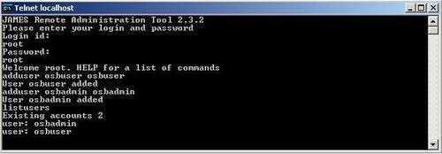
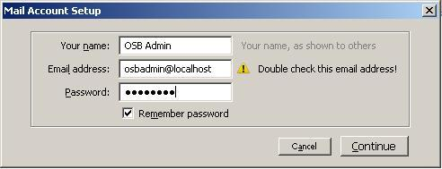
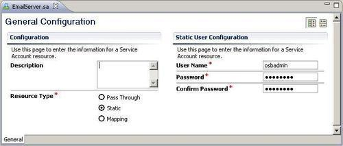
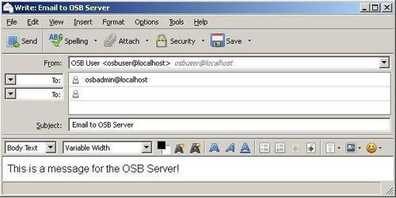
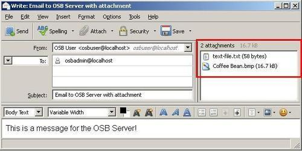
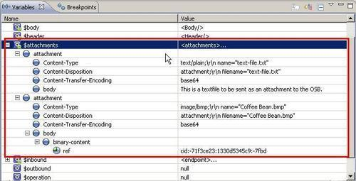

Oracle Service Bus offers the Email Transport for both receiving and sending e-mails.
In this recipe, we will show how we can set up a proxy service to listen on a mailbox for new e-mail messages. For each new e-mail message, the message processing as defined in the message flow of the proxy service is executed.

In order to be able to receive e-mails on the OSB, we need a running mailserver. We could connect to an already existing e-mail server, but for this recipe to be standalone, we will use the Apache James mailserver. Perform the following steps for the installation of Apache James on the local machine:
#Apache_James_2.3.2_is_the_stable_version. bin folder within the Apache James binaries. run.bat.
telnet localhost 4555. root on the Login id prompt. root on the Password prompt. adduser <user> <password>. osbuser and osbadmin user.
listusers command. quit to exit the telnet session and close the command window.Now, let's install an e-mail client in order to send and receive e-mails. We will use Mozilla Thunderbird here, but it can be replaced by any other e-mail client. Perform the following steps to set up Thunderbird:
OSB User into the Your name field. osbuser@localhost into the Email address field. Ignore the warning message. osbuser into the Password field. OSB Admin user.
OSB User account to the OSB Admin account (E-mail address: osbadmin@localhost).We have now configured the e-mail server and an e-mail client. Let's now implement the proxy service which consumes e-mail messages from the osbadmin@localhost mailbox.
First, we will create a service account object, which we will use in the proxy service to authenticate against the e-mail server. In Eclipse OEPE, perform the following steps:
consuming-emails. proxy and security folder. security folder and select New | Service Account to create a new Service Account object. EmailServer into the File Name field and click Finish. osbadmin into the User Name field and osbadmin into the Password and Confirm Password fields.
Now, we create the proxy service, which will use the service account to retrieve the e-mails from the e-mail server:
proxy folder and name it EmailConsumer. mailfrom:localhost:110 into the Endpoint URI field. 10 into the Polling Interval to configure polling every 10 seconds. c:\temp\emails-download into the Download Directory field. c:\temp\error into the Error Directory field. $body into the Expression field and select Warning for the Severity.Now it's time to test the proxy service. In Mozilla Thunderbird (or any other email client), perform the following steps in order to send a message to the osbadmin@localhost e-mail address.
osbadmin@localhost into the To field. Email to OSB Server into the Subject field. This is a message for the OSB Server! for the body of the e-mail message.
After a while (around 10 seconds), the log message should appear on the Service Bus console window with the content of the e-mail body:
<16.10.2011 20:48 Uhr MESZ> <Warning> <ALSB Logging> <BEA-000000> < [MailConsume rPipelinePair, MailConsumerPipelinePair_request, LogStage, REQUEST] Body of Emai l: <soapenv:Body xmlns:soapenv="http://schemas.xmlsoap.org/soap/envelope/">This is a message for the OSB Server!</soapenv:Body>>
Receiving e-mails by the OSB server is as simple as using a proxy service with the Email Transport. In order to be able to select the Email Transport protocol on the Transport tab, either a Messaging Type or Any XML Service type of proxy service needs to be configured.
A proxy service using the Email Transport must always be one-way, that is, the Response Message Type needs to be set to None.
The Email Transport is a polling transport, which means that it polls the E-mail server repeatedly for new e-mails. The Polling Interval property on the Email Transport tab defines the time in seconds the transport should wait in between.
Both POP3 and IMAP can be used for the e-mail protocol. POP3 is the default.
If there are multiple new e-mails waiting on the mail server for consumption, then each e-mail will cause a new proxy service to be started, that is, the message flow will handle always only exactly one e-mail message. The Read Limit property on the Email Transport tab controls the number of e-mails to consume in each poll.
The body variable in the message flow holds the content of the e-mail body, as we have seen in the log output previously. The other information of the e-mail, such as the to-email-address or the subject, can be found in the transport element of the inbound variable. Here is the content of the transport element for the test we did previously:
<con:transport xmlns:con="http://www.bea.com/wli/sb/context"> <con:uri>mailfrom:localhost:110</con:uri> <con:mode>request</con:mode> <con:qualityOfService>exactly-once</con:qualityOfService> <con:request xsi:type="ema:EmailRequestMetaData" xmlns:ema="http://www.bea.com/wli/sb/transports/email" xmlns:xsi="http://www.w3.org/2001/XMLSchema-instance"> <tran:headers xsi:type="ema:EmailRequestHeaders" xmlns:tran="http://www.bea.com/wli/sb/transports"> <tran:user-header name="Delivered-To" value="osbadmin@localhost" /> <tran:user-header name="MIME-Version" value="1.0" /> <tran:user-header name="Message-ID" value="<4E9B28D3.6070802@localhost>" /> <tran:user-header name="Return-Path" value="<osbuser@localhost>" /> <tran:user-header name="Content-Transfer-Encoding" value="7bit" /> <tran:user-header name="Received" value="from 127.0.0.1 ([127.0.0.1]) by soavm11 (JAMES SMTP Server 2.3.2) with SMTP ID 98 for <osbadmin@localhost>; Sun, 16 Oct 2011 20:56:19 +0200 (CEST)" /> <tran:user-header name="User-Agent" value="Mozilla/5.0 (Windows NT 5.2; rv:7.0.1) Gecko/20110929 Thunderbird/7.0.1" /> <ema:To>osbadmin@localhost</ema:To> <ema:From>OSB User <osbuser@localhost></ema:From> <ema:Date>Sun Oct 16 20:56:19 CEST 2011</ema:Date> <ema:Subject>Email to OSB Server</ema:Subject> <ema:Content-Type>text/plain; charset=ISO-8859-1; format=flowed </ema:Content-Type> </tran:headers> <tran:encoding xmlns:tran= "http://www.bea.com/wli/sb/transports"> ISO-8859-1</tran:encoding> </con:request> </con:transport>
E-mails with attachments are also supported by the Email Transport. Let's change the test case from before and add two additional attachments.
The first attachment is a text file and the second one is a BMP image, with binary content.

Information about the e-mail attachments is available through one of the standard OSB variables called attachments. The following screenshot shows the contents of the attachments variable during execution of the proxy service after consumption of the e-mail sent previously (content of the variables from the OSB debugger). Attachments hold a collection with an attachment element for each file attached to the e-mail.

If an attachment is text-based (text/plain), then the content of the file is directly available through the body element. This is the case for the first attachment.
If an attachment is binary (image/bmp), then the body element only holds a reference to the binary content.